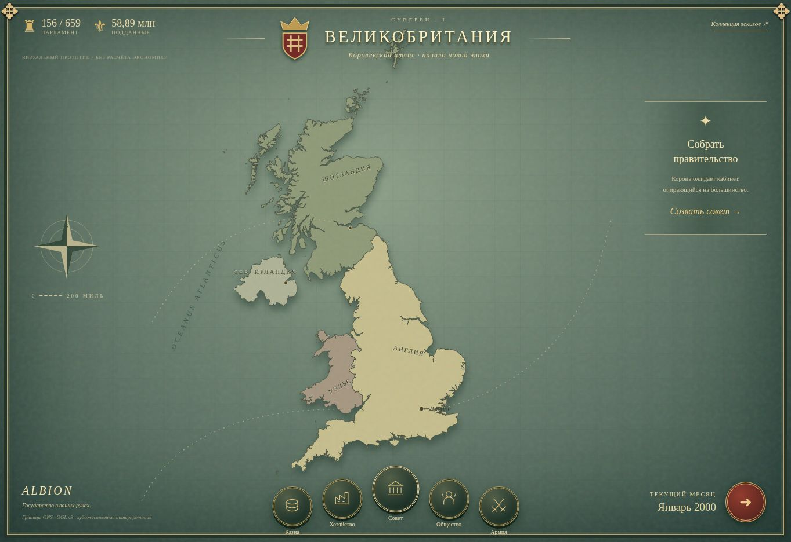
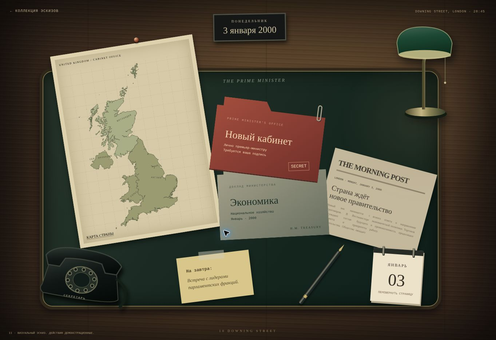
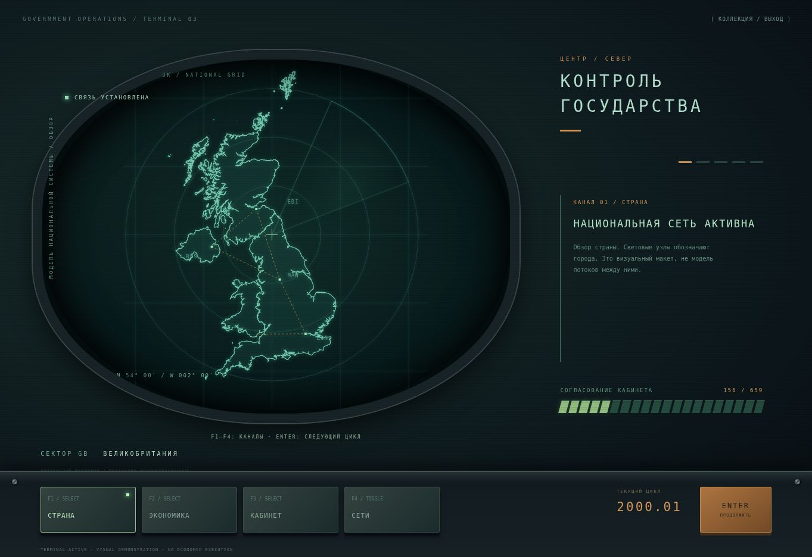

Имперский атлас
Гравированная карта, герб, круглые медальоны и королевская канцелярия. Государство как большая классическая кампания.
ВОЙТИ В АТЛАС ↗
Кабинет премьера
Кожаный бювар, папки, телефон, пресса и настольная карта. Управление через предметы, документы и личные решения.
ВОЙТИ В КАБИНЕТ ↗
Оперативный центр
Радиолокационный экран, световые узлы, операторские каналы и физический пульт. Государство как управляемая система.
ПОДКЛЮЧИТЬСЯ ↗